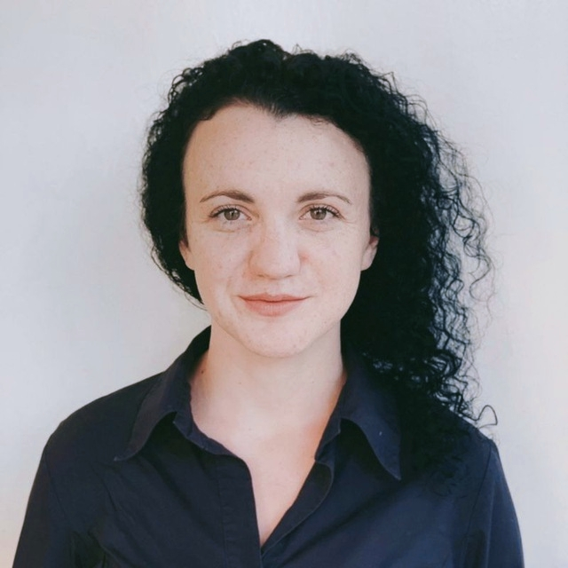

Kostiuk Juliia
Pediatric Oncologist
Summary
Open-minded young professional doctor. Willing to share and to be trained. Focused on furher training and scientific research in the area of pediatric oncology to improve national standards and provide high-quality health care
Experience
Head of oncology department
NCH "Ohmatdt"
- Organization of the department
- Development of local protocols, patient routes
- Human resources
- Conducting high-dose chemotherapy in children with CNS tumors
Junior Lecturer Ivano-Frankivsk National Medical University 04.2018-01/2020
Responsibilities:
- teach international students through practical sessions, discussion, visual presentations
- prepare subject material according to approved curriculum and conduct high quality practical lessons
- medical practice in hospital department and academic scientific research
Pediatric Oncologist
Ivano-Frankivsk Regional Children`s Hospital 09.2018-01.2020
- carefully analyse test results and information gathered during examinations to properly diagnose illneses and diseases
- maintain confidentiality of patients, colleagues and sensitive situations
- maintain accurate medical records and document patients case history in detail
- prescribe medications according to safety, efficacy, and legal authorizations.
- observe the dynamics of diseases and post-treatment side-effects.
- provide emergency aid
- conduct case-based research to apply innovative treatment methods
Education
- Pediatric oncologist in Kharkiv Medical Academy of Postgraduate Education 2019
- Spesialist Degree in Pediatrics Ivano-Frankivsk National Medical University 09.2010-06.2016

Personal info
- Phone +380664457476
- E-mail juli90111@gmail.com
Skills
- Analytical and critical thinking
- Pediatric care
- Leadership
- Communication
- Teamwork
- Self-management
- Problem Solving
- Adaptability
- Organisational skills
- Ability to coordinate
Languages
- Ukrainian
- English